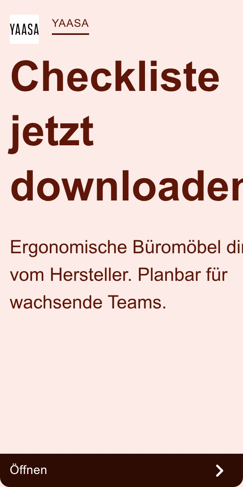

YAAS-GOOG-017

YAAS-GOOG-017YAAS-GOOG-017 · Yaasa · Google · 完整导出广告画面
品牌 / 平台：Yaasa / Google。A类真实广告。图像性质：完整导出广告画面。范围：办公采购邻近素材。
图片像素：600×1200，比例1:2。文件：01_Original_Competitor_Ads/Yaasa/Google/YAAS-GOOG-017.webp。
原广告来源。广告记录：YAAS-GAD-017。日期证据：德国日期筛选列表已核验；单条首次/最后日期未读取。首次：未读取；最后：未公开/未读取。首次/最后边界不表示连续投放。
视觉描述
Yaasa 的企业采购资料素材，正面平面版式，信息展示。主产品包围框占画面面积粗估无产品主体，主体在无产品主体，焦点为下载清单。画面为浅粉、深棕配色，平面合成。无人物；无产品主体。文字位置：大标题居上，正文居中，底部 CTA。主要表达企业采购、选购信息。
背景复杂度：低。留白：按原图文字区与产品区的分工理解，不逐像素复刻。主体包围框面积的人工粗估区间，含桌脚间空白，不是像素测量。
人物：无完整使用人物。交互：由桌面物件、桌高或部位关系表达使用；不从静帧推断运动性能。真实感判断：布景或棚拍感较强；是否真实摄影/渲染未做鉴定。
创意类型：卖点信息图型。卖点：企业采购、选购信息。
创意逻辑与需求
用清单下载降低企业采购的决策门槛，是办公采购邻近素材，不是升降桌功能演示。
购买需求：企业采购、选购信息相关的选择与使用疑问；这是需求匹配推断，不是广告转化证明。
可借鉴与变化
参考什么：原图的正面平面版式、信息展示与“下载清单”的关系。用清单下载降低企业采购的决策门槛，是办公采购邻近素材，不是升降桌功能演示。
如何改变：从资料下载封面改为真实采购判断：办公室负责人拿尺寸清单核对两个独立桌位；桌架旁展示板材、重量、孔位的检查项目。改变信息载体、人物动作和镜头，不能移植竞品电子书或承诺。
匹配产品：Dual Ultra X 白色 180×80 cm; Einzelmotor 白色电动升降桌架。
不照搬：Logo、品牌配色系统、评价/星级、获奖/认证、价格/保证、专有结构与未经核验功能；不得把竞品图片直接改标发布。
文字说明：标题/正文合计短摘录最多25词；纯图文内容见原图。未读取的标题/正文不补写。